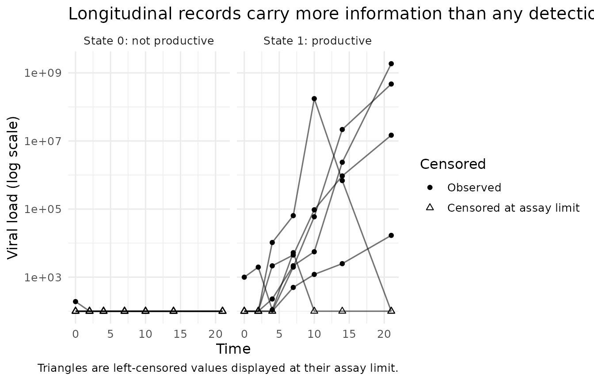
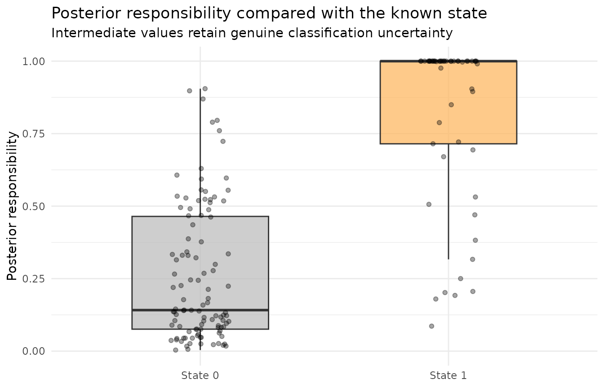
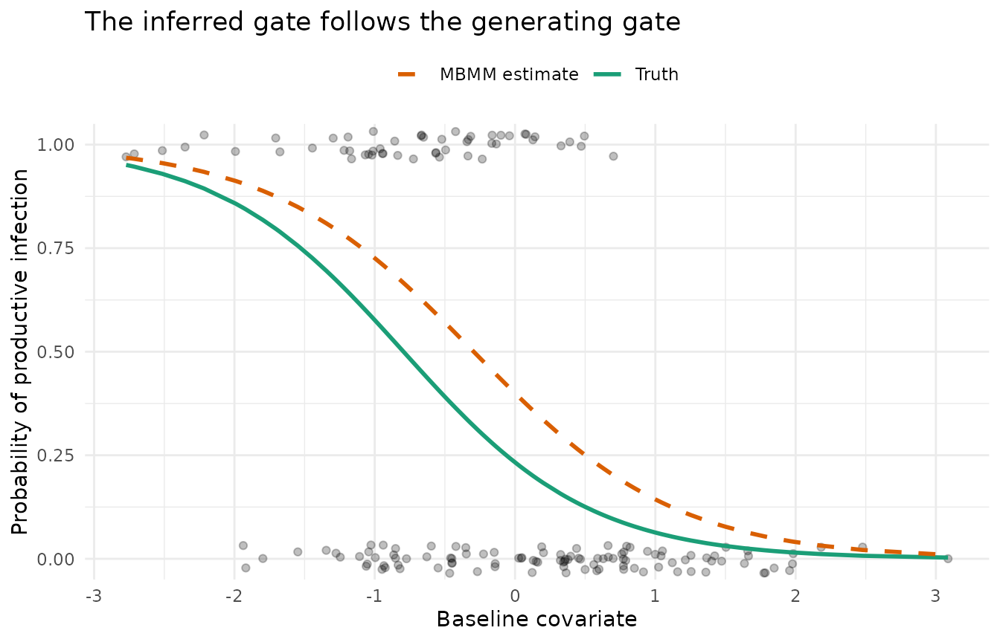

library(mbmm)
library(ggplot2)
theme_set(theme_minimal(base_size = 12))
auc <- function(score, positive) {
r <- rank(score)
np <- sum(positive)
nn <- sum(!positive)
(sum(r[positive]) - np * (np + 1) / 2) / (np * nn)
}What this vignette must establish
Scientific question: does a baseline covariate change the probability of productive infection?
Why MBMM: productive infection is latent. A participant can have a transient detectable measurement without the sustained viral trajectory that defines the biological state.
Route I: an independent sample of known productively infected donors is available. Its trajectories define the state-1 kinetic population. The analysis participants never contribute to that bank.
Because this is a simulation, we know the true state and the true gate coefficient. Success means that MBMM should:
- distinguish productive infection better than an “any detection” rule;
- recover the negative direction and approximate size of the gate effect;
- preserve uncertainty for ambiguous participants; and
- reject the no-covariate gate in a permutation test.
The simulation is deliberately larger than a toy example. A small donor bank is not expected to reproduce a smooth generating population atom by atom; the scientific checks concern held-out state evidence and the gate effect.
The hierarchy in scientific language
| MBMM object | Meaning in this simulation |
|---|---|
| repeated, possibly censored viral-load measurements | |
| productive infection | |
| no productive infection; some participants have transient detections | |
| standardised baseline covariate | |
| logistic gate with true slope | |
| kinetic population estimated from independent state-1 donors | |
| analysis trajectory integrated over | |
| background likelihood near the assay floor |
The covariate enters only the gate. It is not used to build the bank or to score trajectories.
Mechanistic trajectory: the eclipse-phase viral ODE
The productive-infection candidates solve
is susceptible target cells,
and
are eclipse and productive infected cells, and
is viral load. A candidate row supplies the kinetic parameters.
eclipse_trajectory() solves this system;
eclipse_design() constructs an identifiable candidate
design.
analysis <- simulate_mbmm(n = 160, beta_ab = -1.5, prevalence = 0.3,
p_abortive = 0.4, n_pool = 120, seed = 7)
reference <- simulate_mbmm(n = 360, beta_ab = 0, prevalence = 0.5,
p_abortive = 0, n_pool = 120, seed = 17)
reference_ids <- reference$truth$id[reference$truth$z == 1]
reference_obs <- subset(reference$obs, id %in% reference_ids)
c(analysis_participants = nrow(analysis$truth),
independent_state1_donors = length(reference_ids))
#> analysis_participants independent_state1_donors
#> 160 191The reference simulation is generated independently, contains no abortive state-0 records, and is then restricted by the known simulated state. That restriction is what makes the donor bank pure. Independence alone would not be enough if the donor set were an unrestricted state mixture.

For visualisation only, a censored value is drawn at its assay limit
and marked with a triangle. The likelihood does not
treat it as an observed value at that limit:
trajectory_loglik() uses the appropriate left-tail
probability.
Build the state-1 bank from independent donors
First create candidates and reject any trajectory that becomes non-positive between visits. This is a mechanistic screen fixed without the analysis cohort.
candidates <- eclipse_design(500, seed = 2)
trajectory <- function(time, theta) {
eclipse_trajectory(time, theta$beta, theta$delta, theta$p, theta$V0,
kappa = theta$kappa, c_clear = theta$c_clear,
T0 = theta$T0)
}
positive <- screen_positive(candidates, trajectory,
grid = seq(0, 22, by = 0.5))
candidates <- positive$candidates
c(rejected_nonpositive = positive$rejected,
retained_positive = nrow(candidates))
#> rejected_nonpositive retained_positive
#> 102 398trajectory_loglik() evaluates every donor against every
candidate under a log-scale Gaussian observation model with exact
handling of left censoring. The generating residual scale is known here
to be 0.5.
LL_reference <- trajectory_loglik(reference_obs, candidates, trajectory,
sigma = 0.5)
screen <- screen_candidates(LL_reference, nu = 80)
bank_candidates <- candidates[screen$keep, , drop = FALSE]
bank <- fit_bank(LL_reference[, screen$keep, drop = FALSE], lambda = 1)
c(candidate_atoms = nrow(bank_candidates),
effective_atoms = 1 / sum(bank$weights^2))
#> candidate_atoms effective_atoms
#> 398.00000 35.12694The candidate support screen uses only independent donors, so it is
also independent of every scored analysis participant.
fit_bank() estimates how frequently those kinetic
candidates occur in the donor population.
Form the two class likelihoods
LL_analysis <- trajectory_loglik(analysis$obs, bank_candidates, trajectory,
sigma = 0.5)
l1 <- class_loglik(LL_analysis, bank$weights)
l0 <- background_loglik(analysis$obs, sigma = 0.5, floor = 0.5)For state 1, class_loglik() integrates rather than
selects across the bank. For state 0, background_loglik()
represents repeated measurements near the assay floor. No infection-time
lag is integrated here because simulate_mbmm() generated
observations without a latent timing offset. A real analysis should
integrate a lag only when that uncertainty belongs to its observation
model.
Fit the covariate gate
X <- cbind(intercept = 1, baseline = analysis$truth$x)
fit <- fit_gate(l1, l0, X)
oracle <- coef(glm(z ~ x, data = analysis$truth, family = binomial()))
coefficient_check <- data.frame(
quantity = c("Generating truth", "Oracle using true state", "MBMM"),
intercept = c(analysis$alpha, oracle[1], fit$gamma[1]),
baseline_slope = c(-1.5, oracle[2], fit$gamma[2])
)
coefficient_check
#> quantity intercept baseline_slope
#> Generating truth -1.1920231 -1.500000
#> (Intercept) Oracle using true state -0.9963956 -1.170741
#> intercept MBMM -0.4063000 -1.380082The oracle is the ordinary logistic fit that would be available if productive infection were observed without error. It separates finite-sample variation in the simulated states from error introduced by latent-state inference.


Did MBMM recover what it should?
detected <- tapply(!analysis$obs$censored, analysis$obs$id, any)
recovery <- c(
true_slope = -1.5,
oracle_slope = unname(oracle[2]),
mbmm_slope = unname(fit$gamma[2]),
mbmm_state_AUC = auc(fit$w, analysis$truth$z == 1),
detection_rule_AUC = auc(as.numeric(detected), analysis$truth$z == 1),
uncertain_responsibilities = sum(fit$w > 0.1 & fit$w < 0.9)
)
round(recovery, 3)
#> true_slope oracle_slope
#> -1.500 -1.171
#> mbmm_slope mbmm_state_AUC
#> -1.380 0.916
#> detection_rule_AUC uncertain_responsibilities
#> 0.785 87.000
table(any_detection = detected, true_productive_state = analysis$truth$z)
#> true_productive_state
#> any_detection 0 1
#> FALSE 69 4
#> TRUE 38 49
test <- gate_test(l1, l0, X, B = 199, seed = 1)
test
#> <mbmm_test>
#> T (likelihood ratio) = 15.920 on 1 df
#> chi-squared p = 6.609e-05
#> permutation p = 0.00500 (B = 199, smallest attainable 0.00500)These executable checks prevent the vignette from quietly presenting a failed simulation as success.
What this example establishes—and what it does not
In this controlled setting, an independent, pure state-1 donor bank produces useful held-out state evidence, outperforms thresholded detection, and recovers the gate effect. It checks the package’s Route I computation against known truth.
For a real study, the user must still justify donor-state purity, transportability of within-state kinetics, candidate coverage, the observation model, and the complete independence of bank construction. Return to the scientific and practical guide, or continue to the Route II simulation to see how the construction changes when no labelled reference population exists.